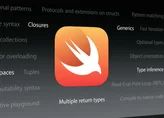
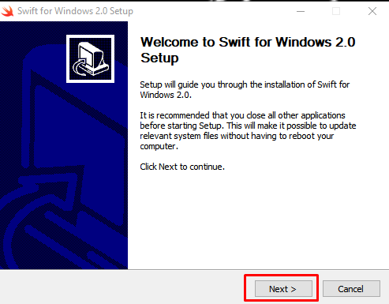
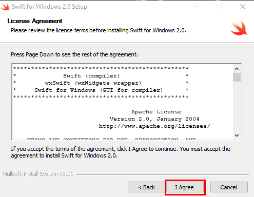
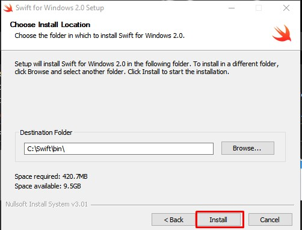

Conteúdo do Módulo 1
Bem-vindo ao Módulo 1 do curso! Neste módulo, você aprenderá sobre o Histórico, Características, Instalação, Estruturas de controle, Variáveis, Operadores, tipos de dados, funções, Arrays e Exemplos básicos de Programação.
Histórico
Foi apresentada em 2014 como um sucessor para Objective-C, porém mais segura, rápida e expressiva, hoje em dia Swift pode ser usado para desenvolver programas para Windows, Linux e cloud services (além das plataformas da Apple - iOS, iPadOS, macOS, watchOS e tvOS). Assim como Kotlin e Rust, Swift é compilado para machine code usando LLVM toolchain, porém também permite execução por meio de Read-Eval-Print-Loop para escrever e testar código em tempo real, sem a necessidade de recompilar.
Características
O Swift é uma linguagem de programação de código aberto (open source)
Você pode até construir soluções back-end utilizando Swift com o auxílio de algum framework, como o Vapor ou o Kitura.
O Swift é uma linguagem orientada a objetos, além de ser a primeira linguagem orientada a protocolos.
linguagem fortemente tipada.
Instalação
Vá neste site
https://swiftforwindows.github.io/
clique em download
execute o instalador
next, I agree, install
  instalado :D